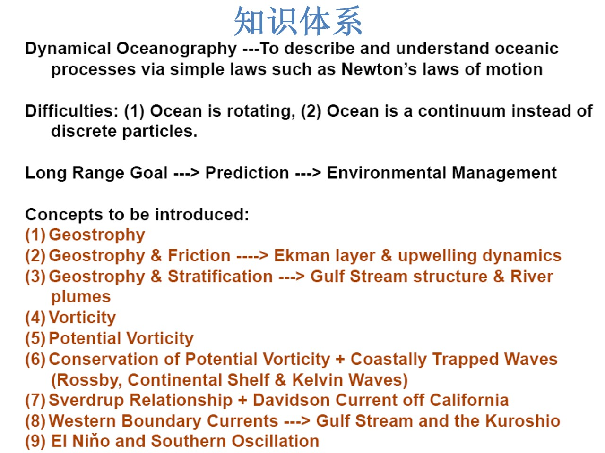

先记住一句话
动力海洋学，就是用牛顿定律这类简单规律，去解释海洋为什么这样流、这样转、这样变。
描述性物理海洋学回答“是什么、在哪里”；动力海洋学回答“为什么”。这张图就是“为什么”的路线图：从最简单的平衡开始，每走一步加一个现实因素。
两个难点：为什么不能直接套牛顿定律
海洋在旋转
地球在自转。坐在旋转的参考系里看，运动的物体会“拐弯”——这就是科氏力。它不是真正的力，而是惯性在旋转坐标系里的表现。
类比：在旋转的转盘上把球直线扔出去，旁边的人看到球拐弯。
海洋是连续体
海水不是一颗颗台球，而是一大片连续的水。不能只追踪单个水团，要用“场”来描述：速度场、压强场、密度场。
类比：一锅汤，不是一袋弹珠。
一句话：旋转让方向变复杂，连续体让数学变复杂。下面九步，就是逐步把这两个复杂因素加进来。
长期目标：从“看懂”到“用得上”
看懂
为什么流这样走、为什么水会上升。
预测
明天、明年、十年后怎么变。
环境管理
渔业、污染、航运、气候适应。
九步概念不是考试清单，而是从“看懂”走到“预测”的台阶。
九步知识链：每一步只加一个现实因素
先看整条链：地转 → 加摩擦 → 加层结 → 加涡度 → 加位涡 → 加边界 → 加风旋度 → 加西边界 → 加热带海气。下面每一步都按“加了什么 / 一句话 / 现实例子”讲。
地转平衡（Geostrophy）
加了什么：只保留压强梯度力 + 科氏力，先忽略摩擦。大尺度海水不直接冲向低压，而是沿着等压线绕；压强梯度想把水推过去，科氏力把它拐回来。
现实例子：湾流、黑潮的大尺度路径。
地转 + 摩擦 → Ekman 层与上升流
加了什么：加上风应力和摩擦。风推表层水，水在旋转下向右偏；表层偏 45°，整层净输送偏 90°。
现实例子：离岸风把表层水推离海岸，深层冷水上来，形成上升流。
地转 + 层结 → 湾流结构与河口羽流
加了什么：加上密度层结：暖轻水在冷重水上面。密度面倾斜，流速随深度变化（热成风）；湾流不是一根均匀的管子，而是斜压结构。
现实例子：湾流、河口淡水羽流。
涡度（Vorticity）
加了什么：开始描述“水团自己的旋转”。涡度是流体局部转动的度量；正负表示逆时针或顺时针。
现实例子：涡旋、剪切流。
位涡（Potential Vorticity）
加了什么：把涡度、地球自转、水柱厚度放在一起：q=(ζ+f)/H。位涡像一个“旋转 + 厚度”的守恒账本；水柱被拉长或压缩，旋转就得变。
现实例子：水柱越过海脊、被沿岸流拉长。
位涡守恒 + 沿岸陷波
加了什么：加上边界（海岸、陆架）和地形。海岸和地形把波“拴”在岸边；罗斯贝波、陆架波、开尔文波都靠位涡守恒传播。
现实例子：沿岸水位和流量的传播。
Sverdrup 关系 + 加州 Davidson 流
加了什么：加上风应力的“旋度”（风的拧劲）。风应力旋度驱动海洋内部的南北向输送；Sverdrup 平衡把风场和经向流连起来。
现实例子：加州沿岸的 Davidson 流。
西边界流 → 湾流与黑潮
加了什么：加上海盆的西边界。为了把 Sverdrup 输送送回边界，西侧形成窄而快的西边界流。
现实例子：湾流、黑潮。
厄尔尼诺与南方涛动（ENSO）
加了什么：加上热带海气耦合和气候变率。赤道太平洋的风、温跃层、海温互相反馈，形成厄尔尼诺/拉尼娜。
现实例子：1997–98、2015–16 厄尔尼诺。
一条主线：像搭积木一样
这九步不是并列的，而是递进的：先假设没有摩擦（地转），再加风与摩擦（Ekman/上升流），再加层结（湾流/羽流），再加涡度与位涡（水柱变形），再加边界（沿岸波），再加风旋度（Sverdrup），再加西边界（湾流/黑潮），最后加热带海气耦合（ENSO）。每加一个因素，就多解释一类现象；每退一步，就回到更简单的理想情况。
记忆口诀：一转二风三密度，四涡五位六沿岸，七风八界九厄尔尼诺。
补一张：行星罗斯贝波到底是什么？
一句话：行星罗斯贝波，是地球自转随纬度变化（β 效应）造成的大尺度波动；它的相位总是向西传。
为什么会有：水团向北移，f 变大；为了保持位涡，相对涡度必须变小（反气旋式）。水团向南移，f 变小；相对涡度必须变大（气旋式）。这种“恢复”让扰动整体向西挪。
q = (ζ + f)/H
∂ζ/∂t + βv = 0
ω = −βk/(k² + l²)
c_x = ω/k = −β/(k² + l²) < 0（向西）
- 波长越长，向西越快；短波向西慢。
- 相速向西，不代表能量只能向西：短波的群速可以向东。
- 海洋里第一斜压模的罗斯贝波速度约几 cm/s，跨洋要数月到数年；大气里表现为西风带的长波槽脊。
- 赤道罗斯贝波把西太平洋的风异常向西传，反射成开尔文波，是 ENSO 的重要环节；沿岸的罗斯贝波/陆架波被边界“拴”住。
类比：像一排多米诺骨牌——每块牌只倒一下，倒下的“形状”却沿队列传很远；罗斯贝波里，水团只是南北晃，波的相位却向西走。
所以第 6 步的“罗斯贝波”不是另一种波，而是位涡守恒在地球自转随纬度变化下的必然结果；沿岸陷波只是把这种波“拴”在边界附近。
30 秒复述：你能讲清这三句吗？
- 为什么大尺度海流不直接冲向低压？
- 风怎样把深层冷水带到海面？
- 为什么西边界流又窄又快？
如果你能用三句话答出来，这张图就变成你的了。
作业原图与来源
对应教材：Ch.7 地转、Ekman、位涡；Ch.8 波动与沿岸；ENSO 相关章节。作业要求：用自己的话解释这张图，不抄概念，讲清每一步在解决什么问题、和上一步是什么关系。
